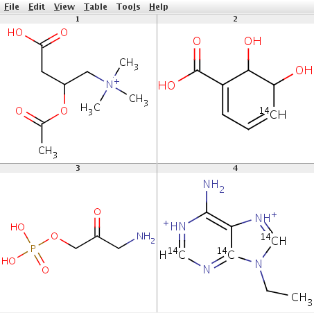
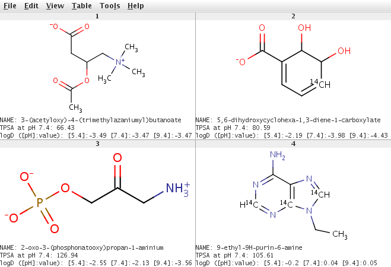

The aim of the examples below is to show how to work with Calculator Plugins via Java API.
ElementalAnalyserPlugin is used to demonstrate the usage of the Calculator Plugin API step-by-step.
These steps are common to all types of Calculator Plugins.
chemaxon.marvin.calculations package.
import chemaxon.marvin.calculations.ElementalAnalyserPlugin;Instantiate a new
ElementalAnalyserPlugin object with its default constructor.
ElementalAnalyserPlugin plugin = new ElementalAnalyserPlugin();
ElementalAnalyserPlugin object the parameters of the calculation can be set with plugin
specific setter methods. The precision of the results can be set with the
setDoublePrecision(int) method.
plugin.setDoublePrecision(2);
Molecule object) as input, and perform the calculation on one molecule at a time. The input molecule
can be set with the
setMolecule(Molecule) method.
plugin.setMolecule(mol);
run()
method of the plugin should be called.
plugin.run();
ElementalAnalyserPlugin can return
several kinds of results, some of these are:
double mass = plugin.getMass(); double exactMass = plugin.getExactMass();
// the number of all atoms in the molecule
int atomCount = plugin.getAllAtomCount();
// carbon atom count
int countOfC = plugin.getAtomCount(6);
// carbon-14 isotope count
int countOfC14 = plugin.getAtomCount(6, 14);
String formula = plugin.getFormula();
String composition = plugin.getComposition();
In the file ElementalAnalyserPluginExample.java a complete
code example can be found which uses the code parts above (download source).
It reads input molecules from a file given as command line parameter and displays the results.
The input file example_mols.sdf contains a few chemical structures shown below.
|  |
To compile the ElementalAnalyserPluginExample.java
example MarvinBeans.jar has to be referenced in the CLASSPATH. After compiling the example can
be run from command line.
Usage:
java ElementalAnalyserPluginExample [molFile]
Example:
java ElementalAnalyserPluginExample example_mols.sdf
The output is:
CC(=O)OC(CC(O)=O)C[N+](C)(C)C formula: C9H18NO4, mass: 204.2435, exact mass: 204.123583069 number of atoms (32): C (9), C-14 (0) composition: C (52.93%), H (8.88%), N (6.86%), O (31.33%) OC1[14CH]=CC=C(C1O)C(O)=O formula: C7H8O4, mass: 158.1286, exact mass: 158.045500732 number of atoms (19): C (7), C-14 (1) composition: C (54.43%), H (5.1%), O (40.47%) NCC(=O)COP(O)(O)=O formula: C3H8NO5P, mass: 169.0731, exact mass: 169.014008883 number of atoms (18): C (3), C-14 (0) composition: C (21.31%), H (4.77%), N (8.28%), O (47.32%), P (18.32%) CCN1[14CH]=[NH+]C2=C(N)[NH+]=[14CH]N=[14C]12 formula: C7H11N5, mass: 171.1734, exact mass: 171.111171341 number of atoms (23): C (7), C-14 (3) composition: C (52.61%), H (6.48%), N (40.91%)
In the second example
MajorMicrospeciesPlugin is used to generate the major microspecies at pH 7.4,
TPSAPlugin
to calculate the polar surface areas,
logDPlugin
to calculate the logD values, and
IUPACNamingPlugin
to generate the names of molecules read from a molfile. The results of the calculations are written to an SDFile, the
molecules in the file are the major microspecies of the input molecules, IUPAC names, surface area values and logD
values are saved in SDF property fields.
The main steps in this example are the same as in the previous one, only the methods used for parameter settings and the methods used for getting the results are different.
For setting the parameters method setpH(double) is used. Major microspecies at the specified pH will be generated.
mmsPlugin.setpH(7.4); // major microspecies generation at pH = 7.4
For getting the results method getMajorMicrospecies() is used. It returns a Molecule object.
Molecule majorms = mmsPlugin.getMajorMicrospecies();
For setting the parameters method setpH(double) is used.
tpsaPlugin.setpH(7.4); // surface area calculation at pH = 7.4
For getting the results method getSurfaceArea() is used.
double surfaceArea = tpsaPlugin.getSurfaceArea();
There are quite a few parameters that can be set for logD calculation. These are: Cl- ion concentration, Na+/K+ ion concentration, pH (for calculating logD at a single pH value), pH lower limit, pH upper limit, and pH step size.
// set the Cl- and Na+/K+ concentration
logDPlugin.setCloridIonConcentration(0.15);
logDPlugin.setNaKIonConcentration(0.15);
// set the pH range and pH step size
logDPlugin.setpHLower(5.4);
logDPlugin.setpHUpper(9.4);
logDPlugin.setpHStep(2.0);
The results of the logD calculation are returned by the method getlogDs(), the pH values are returned by
the method getpHs(). Both methods return a double array (double[]), the logD array contains the
logD values for corresponding pH-s in the pH array.
double[] pHs = logDPlugin.getpHs();
double[] logDs = logDPlugin.getlogDs();
For getting the results method getPreferredIUPACName() is used, it returns the preferred IUPAC name.
IUPACNamingPlugin has also the method
getTraditionalName() to return the traditional name of the molecule.
String name = iupacNamingPlugin.getPreferredIUPACName();
The complete code example can be found in the file PluginExample.java
(download source). After compiling the example can be run from command line.
Usage:
java PluginExample [molFile]
Example:
java PluginExample example_mols.sdf > results.sdf
The result is written to the results.sdf file.
|  |
The above examples can also be run by run.sh shell script (Linux/UNIX) or RUN.BAT batch file (Windows).
Note: To run the Calculator Plugins license keys issued by ChemAxon are required (only ElemantalAnalyserPlugin,
TPSAPlugin and some calculations of the TopologyAnalyserPlugin do not require a license key to run). To obtain a
license key please or contact our head office.